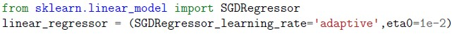
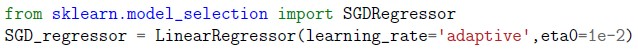
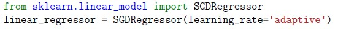
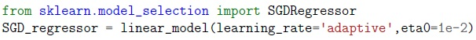
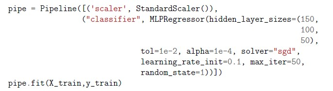

Home / MLP / Week 3 / Real questions
MLP week 3 - real exam questions
60 questions pulled from past papers whose wording matches this week's topics, newest first, duplicates removed. Pick your answers, then press Check answers. Figures and answer keys are the originals.
Elapsed 00:00
Consider the following code:
 After the model is fit
After the model is fit  raises an error. Why?
raises an error. Why?
After the model is fit raises an error. Why?- VotingRegressor deletes the original estimator.
- VotingRegressor internally clones every estimator before fitting.
- LinearRegression does not store coefficients.
- VotingRegressor converts all models to RandomForest since it is the best model out of the 3 due to ensemble learning.
Consider two regularization models, Model A (Ridge) and Model B (Lasso), trained on a dataset where two input features are highly collinear ( X1≈X2 ).
 Which of the following statements accurately describe the expected behavior of these models and their evaluation metrics under severe collinearity?
Which of the following statements accurately describe the expected behavior of these models and their evaluation metrics under severe collinearity?
Which of the following statements accurately describe the expected behavior of these models and their evaluation metrics under severe collinearity?- Model B (Lasso) will distribute the regression coefficients evenly across both X1 and X2 to balance the penalty, while Model A (Ridge) will force one of the coefficients to be exactly zero.
- Model A (Ridge) will shrink the coefficients of X1 and X2 toward zero but keep them roughly equal, whereas Model B (Lasso) will unstablely select one feature to keep and drive the coefficient of the other exactly to zero.
- If the target variable y contains extreme outliers, evaluating these models using Mean Squared Error (MSE) will penalize those large errors more heavily than Mean Absolute Error (MAE).
- Minimizing the MSE loss function during the training of Model A and Model B mathematically guarantees that the sum of the residual errors ( y−ŷ ) will always equal zero.
Consider the following adaboost models:
 Which of the following statements are MOST accurate?
Which of the following statements are MOST accurate?
Which of the following statements are MOST accurate?- adb1 is less likely to overfit than adb2 because its base trees are shallower.
- Increasing n_estimators always improves test accuracy for AdaBoost.
- Learning rate affects the contribution of each base learner; a smaller learning rate always reduces training accuracy.
- adb2 with deeper trees will have lower bias but higher variance than adb1.
Which of the following algorithms don't get impacted by feature scaling?
- LinearRegression
- KNN
- KMeans
- DecisionTree
What does the parameter hidden_layer_sizes=(50, 30) represent in both MLPClassifier and MLPRegressor?
- 50 input features and 30 output units
- Two hidden layers with 50 and 30 neurons respectively
- 50 epochs and 30 batches
- 50 samples per batch and 30 iterations
Which of the following is a hyper parameter?
- "intercept_" in LinearRegression
- "degree" in PolynomialFeatures
- "n_neighbors" in KNeighborsClassifier
- "max_depth" in DecisionTreeClassifier
Identify the errors in the following code:

- include_bias has to be kept true for polynomial features.
- MinMaxScalar should be used for simple LinearRegression Models
- model.fit_transform should be replace with model.fit
- model.predict should be replaced with model.predict_proba
We use classification report to evaluate our classification model:
 Which of the following metrics are included in the classification report?
Which of the following metrics are included in the classification report?
Which of the following metrics are included in the classification report?- Accuracy
- Mean Squared Error
- F1 Score
- Cross Entropy Loss
- Recall
For a LinearRegression model with equation  assume that the noise term
assume that the noise term  . The model parameters satisfy the constraint
. The model parameters satisfy the constraint  A LinearRegression model is trained without intercept as shown below:
A LinearRegression model is trained without intercept as shown below:
 What is the value of
What is the value of  ? Enter your answer rounded to three decimal places
? Enter your answer rounded to three decimal places
assume that the noise term . The model parameters satisfy the constraint A LinearRegression model is trained without intercept as shown below:
What is the value of ? Enter your answer rounded to three decimal placesWhich of the following algorithms may get impacted by feature scaling?
- LinearRegression
- DecisionTree
- SVM
- NaiveBayes
How to change the loss function in SGDRegressor to Huber loss?


Which of the following techniques can be used for hyperparameter tuning in Ridge Regression? Select all correct options.
- GridSearchCV
- ElasticNetCV
- RandomizedSearchCV
- Mini batch gradient descent

- It specifies the tolerance level for early stopping based on the change in thevalidation error.
- It controls the learning rate of the stochastic regressor during training.
- It determines the maximum number of iterations for the training process.
- It defines the fraction of the validation set used for early stopping.
Which of the following Evaluation metrics can be used in a regression problem?
- Mean Squared Error
- Accuracy
- F1-Score
- Mean Absolute Error
- credit score
- CGPA

- The number of base estimators to be trained.
- The size of each sample batch for testing.
- The maximum number of features used for training.
- The number of samples to draw from X to train each base estimator

- It increases the model’s capacity to fit the training data closely, potentiallycausing overfitting.
- It adds a stronger regularization term to the loss function, reducing themodel’s complexity and helping prevent overfitting.
- It makes the model more prone to overfitting by increasing its sensitivity tonoise in the training data.
- It directly affects the learning rate, controlling how fast the model convergesduring training.

- It adjusts the learning rate based on the number of iterations.
- It specifies the learning rate to decrease as the model converges.
- It specifies the fraction of the dataset used for each step in the stochasticgradient descent.
- It defines the initial value for the learning rate and keeps it constantthroughout training.
Which of the following is NOT a hyperparameter in machine learning?
- Learning rate in gradient descent
- Bias in a linear regression model
- Number of clusters in k-means
- Minimum leaf size in decision trees

- It adjusts the learning rate based on the number of iterations.
- It defines the initial value for the learning rate and keeps it constantthroughout training.
- It determines the maximum step size allowed during training.
- It specifies the fraction of the dataset used for each step in the stochasticgradient descent.

- It increases the model’s capacity to fit the training data closely, potentiallycausing overfitting.
- It adds a stronger regularization term to the loss function, reducing themodel’s complexity and helping prevent overfitting.
- It makes the model more prone to overfitting by increasing its sensitivity tonoise in the training data.
- It directly affects the learning rate, controlling how fast the model convergesduring training.
Which of the following are techniques for dimensionality reduction?
- PCA (Principal Component Analysis)
- StandardScaler
- Lasso Regression
- t-SNE (t-distributed Stochastic Neighbor Embedding)

- It defines the tolerance for stopping criteria.
- It defines the learning rate schedule.
- It controls regularization strength.
- It controls the number of iterations.

- It controls the learning rate of the stochastic regressor during training.
- It determines the maximum number of iterations for the training process.
- It defines the fraction of the validation set used for early stopping.
- It specifies the tolerance level for early stopping based on the change in thevalidation error.

- Controls the total number of iterations.
- Specifies the tolerance level for early stopping.
- Defines the number of iterations with no improvement to stop training.
- Sets the learning rate schedule.
How to make SGDRegressor stop after 1000 epochs?


- cv
- reg_rate
- alpha
- tol
Consider the following ML task/steps for a regression dataset: 1. Read the data from a file (named ‘dataset.csv’). It has 7 columns. The last column is the target variable, all 6 features numerical. 2. Remove rows which has target values missing. 3. Split the data into training and test sets. Take randomly the 70% of rows in the training set and the rest of them into the test set. 4. Fill the missing values in the features by KNNImputer using 3 nearest neighbours. 5. Train a LinearRegression model on the training set. 6. Report R2 score on the test set. Which of the following code snippets correctly accomplishes the above task? Assume necessary imports.


Consider following two statements: Statement 1: The GaussianNB classifier can incrementally learn using partial_fit. Statement 2: GaussianNB performance suffers when features are dependent, as it assumes independence in calculating conditional probabilities.
- Both statements are True
- Only statement 1 is True
- Only statement 2 is True
- Both statements are False

- cv
- reg_rate
- alpha
- tol
- lambda
- None of these
Which of the following scikit-learn model supports incremental learning through partial_fit method ?
- SGDClassifier
- LinearRegression
- Perceptron
- SVC

- It controls the learning rate of the stochastic regressor during training.
- It determines the maximum number of iterations for the training process.
- It defines the fraction of the validation set used for early stopping.
- It specifies the tolerance level for early stopping based on the change in thevalidation error.
Select all the correct options:
- The more the SGD iterations, the lesser the fluctuations in training error.
- More iterations require more computation time.
- The tol (error tolerance) parameter restricts the number of iterationsperformed.
- Training error might not consistently decrease while performing SGDiterations.
- None of these
Which of the following metrics indicate higher their value, better the regression model’s performance?
- RMSE
- R2
- Mean absolute error
- Mean squared error

- It controls the learning rate of the stochastic regressor during training.
- It determines the maximum number of iterations for the training process.
- It defines the fraction of the validation set used for early stopping.
- It specifies the tolerance level for early stopping based on the change in thevalidation error.
Which of the following variations of gradient descent can be implemented with SGDClassifier?
- stochastic gradient descent
- mini gradient descent
- full batch gradient descent
- None of these

- Increasing the model’s complexity to fit the training data more closely.
- Adding a stronger regularization term to the loss function, discouragingcomplex models.
- Making the model more capable to learn more complex behaviour.
- Adjusting the learning rate to control convergence speed.

- It determines the maximum fraction of neurons to be used to train the model
- It is the learning rate
- It is the L1 regularization rate.
- It is the L2 regularization rate.
- None of these

- The classifier is based on perceptron model.
- The classifier is based on logistic regression model.
- The learning rate decays every iteration.
- The learning rate is 0.0001.
- It will run exactly for 1000 iterations, which is independent of the data.
- None of these.

- alpha
- tol
- solver
- learner
- algo
- algorithm
Which of the following code blocks will correctly take the learning rate as ‘optimal’ ?


- MultinomialNB
- RandomForestRegressor
- LogisticRegressor
- SGDRegressor
You’re designing an ‘MLPClassifier’ for an image recognition task. The dataset consists of grayscale images of animals. You want to introduce non-linearity to the neural network’s architecture. Which element of the neural network architecture would you adjust to incorporate non-linearity in the model?
- Number of hidden layers
- Number of neurons in input layer
- Learning rate
- Activation function
You’re working on a binary classification task using the ‘MLPClassifier’ to predict whether a customer will make a purchase based on their browsing behavior.You’re concerned about overfitting due to the complexity of the model. You decide to increase the ‘alpha’ parameter to control overfitting. The following code snippet shows the application of ‘MLPClassifier’:
 You’re working on a binary classification task using the ‘MLPClassifier’ to predict whether a customer will make a purchase based on their browsing behavior.You’re concerned about overfitting due to the complexity of the model. You decide to increase the ‘alpha’ parameter to control overfitting. The following code snippet shows the application of ‘MLPClassifier’:
You’re working on a binary classification task using the ‘MLPClassifier’ to predict whether a customer will make a purchase based on their browsing behavior.You’re concerned about overfitting due to the complexity of the model. You decide to increase the ‘alpha’ parameter to control overfitting. The following code snippet shows the application of ‘MLPClassifier’:
You’re working on a binary classification task using the ‘MLPClassifier’ to predict whether a customer will make a purchase based on their browsing behavior.You’re concerned about overfitting due to the complexity of the model. You decide to increase the ‘alpha’ parameter to control overfitting. The following code snippet shows the application of ‘MLPClassifier’: - Increasing the model’s complexity to fit the training data more closely.
- Adding a stronger regularization term to the loss function, discouragingcomplex models.
- Making the model more sensitive to outliers and noise in the data.
- Adjusting the learning rate to control convergence speed.

- DecisionTreeClassifier
- RandomForestRegressor
- LogisticRegressor
- SGDRegressor
Which of the following estimators implement partial_fit method in Regression?
- Ridge Regression
- SGDRegressor
- Linear Regression
- Polynomial Regression
Mention which of the following statement(s) is / are correct? Statement 1: Incremental learning is a dynamic technique which is applied when training data becomes available gradually over time or its size is out of system memory limits. Statement 2: Sklearn can not process large data in batches.
- Statement 1 is correct but statement 2 is incorrect.
- Statement 1 is incorrect but statement 2 is correct.
- Statement 1 and statement 2 both are incorrect.
- Statement 1 and statement 2 both are correct.
Mention whether the following statements are TRUE or FALSE . Statement 1 : ‘In order to extend ROC curve and ROC area to multi-label classification, it is necessary to binarize the output.‘ Statement 2: In SGDClassifier, setting warm_start=True does not retain the weight values of the model after max_iter and hence does not produce different results for each execution.‘
- Statement 1 is correct but statement 2 is incorrect.
- Statement 1 is incorrect but statement 2 is correct.
- Statement 1 and statement 2 both are incorrect.
- Statement 1 and statement 2 both are correct.
You have a binary classification problem to solve with following information: 1. All features are numircal. 2. The dataset has size of 80 GB. 3. The data has to be preprocessed. 4. After data preprocessing, train the model with gradient descent or its variations. Which of the following will perform the above task?
- Perform one hot encoding followed by training with LogisticRegression model(sklearn.linear_model).
- Perform standard scaling followed by asklearn.neighbors.KNeighborsClassifier model.
- Perform min-max scaling followed by a sklearn.tree.DecisionTreeClassifiermodel.
- Perform max-absolute scaling followed by asklearn.linear_model.SGDClassifier model.
Brajesh wants to tune hyper parameters of an AdaBoost model for a classification problem with following specifications: 1. Base estimator as Decision trees classifier with max_depth=1. 2. Number of estimators range from 30 to 40 (both inclusive) at the interval of 1. 3. Cross validation = 5. 4. Learning rate must vary between 0.2 to 2.0 (both inclusive) at the intervals of 0.2. 5. Train the best model on the entire training set. 6. Print score on test set. Which of the following code blocks will correctly execute Brajesh’s task? [Note: Assume necessary imports and variables for training and test sets.]


Mention which of the following statement(s) is / are correct? 1. Statement 1: Incremental learning is a dynamic technique which is applied when training data becomes available gradually over time or its size is out of system memory limits. 2. Statement 2: Sklearn can process large data in batches and updates the model parameters for each batch.
- Statement 1 is correct but statement 2 is incorrect.
- Statement 1 is incorrect but statement 2 is correct.
- Statement 1 and statement 2 both are incorrect.
- Statement 1 and statement 2 both are correct.
The partial_fit in sklearn’s Perceptron model helps to:
- Iteratively train the model over a large dataset
- Implement batch gradient descent
- Update half of the weight parameters in each epoch.
- Tracking progress of the model in each iteration.
The correct code block or blocks to set adaptive learning rate while using SGDRegressor will be:




Consider following statements: 1. Statement 1 : In order to extend ROC curve and ROC area to multi-label classification, it is necessary to binarize the output. 2. Statement 2: In SGDClassifier, setting warm_start=True retains the weight values of the model after max_iter and hence produce different results for each execution. Choose the correct option:
- Statement 1 is correct but statement 2 is incorrect.
- Statement 1 is incorrect but statement 2 is correct.
- Statement 1 and statement 2 both are incorrect.
- Statement 1 and statement 2 both are correct.
You have a regression problem to solve with following information: 1. All features are numerical. 2. The dataset has size of 40 GB. 3. The data has to be preprocessed. 4. After data preprocessing, train the model with gradient descent or its variations. Which of the following will perform the above task?
- Perform one hot encoding followed by training with LinearRegression model(from sklearn.linear_model).
- Perform standard scaling followed by training with KNeighborsRegressormodel (from sklearn.neighbors).
- Perform min-max scaling followed by training with DecisionTreeRegressormodel (from sklearn.tree).
- Perform min-max scaling followed by training with SGDRegressor model (fromsklearn.linear_model).
Consider the following code and select the correct options. (Note: Assume necessary imports.)

Consider the following code and select the correct options. (Note: Assume necessary imports.)- Scaled data have values in between [0, 1].
- Regressor has three hidden layers.
- Regressor has 150 hidden layers.
- Regressor applies stochastic gradient decent to update the weights.
Rajesh wants to tune hyper parameters of an AdaBoost model for a classification problem with following specifications: 1. Base estimator as Decision trees classifier with max_depth=1. 2. Number of estimators range from 10 to 20 (both inclusive) at the interval of 1. 3. Cross validation =4. 4. Learning rate must vary between 0.1 to 1.0 (both inclusive) at the intervals of 0.1. 5. Train the best model on the entire training set. 6. Print score on test set. Which of the following code blocks will correctly execute Rajesh’s task? [Note: Assume necessary imports and variables for training and test sets.]


Which of the following code blocks will correctly take the learning rate as ‘invscaling’ ?


Which of the following options is the correct method to shuffle training data after each epoch in SGDRegressor?


Which of the following options represent(s) the correct method(s) to search for the best regularization parameter for ridge regression?
- Search for the best regularization rate with built-in cross validation in RidgeCVestimator
- Step 1: Instantiate object of Ridge estimator.Step 2: Set parameter alpha to the maximum regularization rate.
- Use cross validation with Ridge to search for best regularization.
- Apply cross validation with SGDRegressor for searching the best regularizationparameter.
Which of the following code blocks will correctly train a large scale regression model using partial_fit, if shape of X_train,Y_train are given as (8000,900,10) and (8000,900) respectively. Note that the dataset has been transformed into batches of size 900 each?